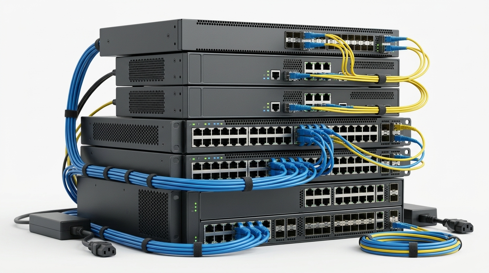
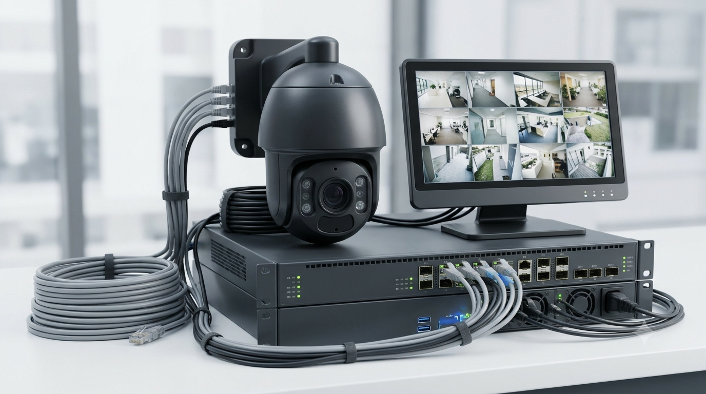
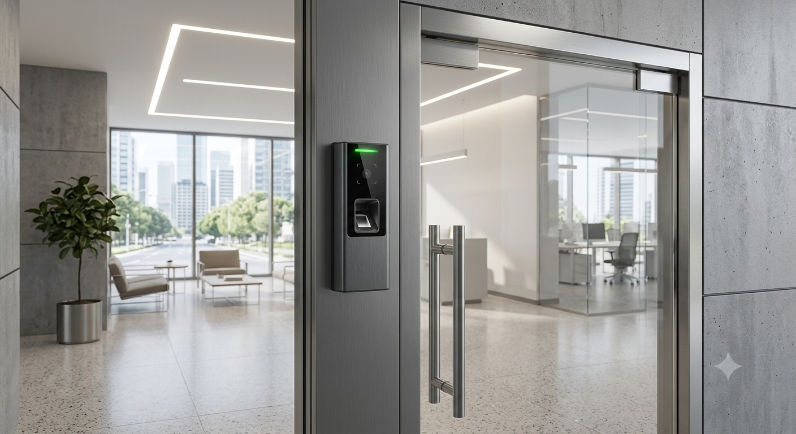
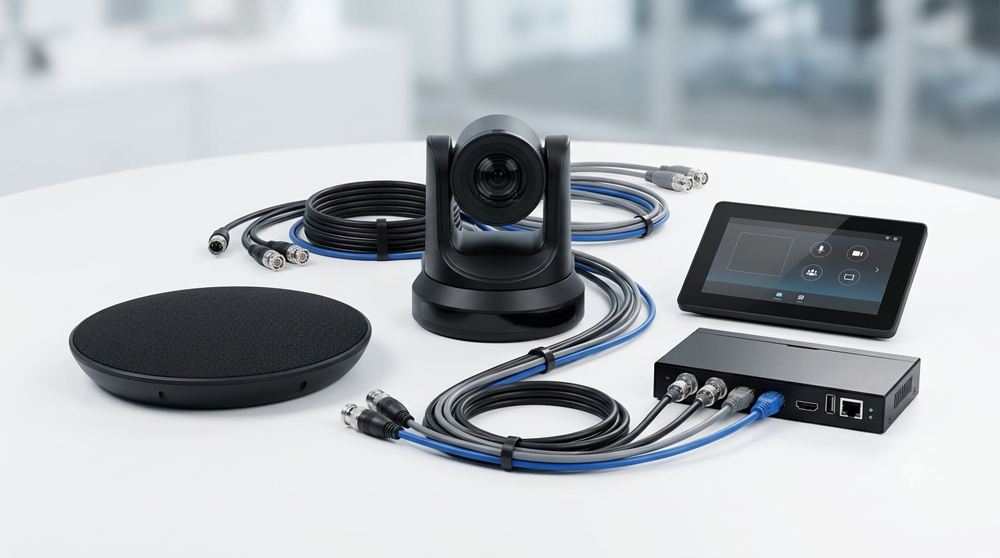
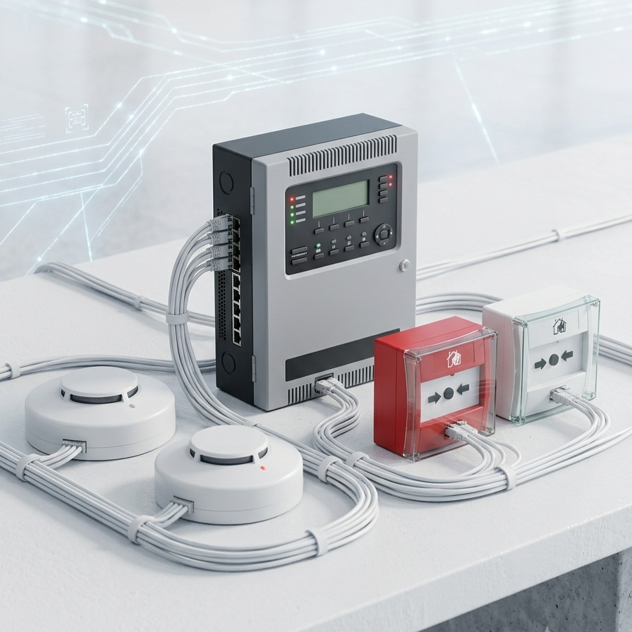

Microsoft
Microsoft technologies support productivity, collaboration, cloud computing, business communication, and enterprise infrastructure.
Our services are designed around the complete technology requirements of modern businesses—from the network infrastructure behind the walls to the systems employees use every day.
Your network supports your cameras. Your infrastructure powers your applications. Your meeting rooms depend on reliable connectivity.
Kilton brings these moving parts together through considered technology selection, integration and project support.
See how we approach projects ↘A reliable network is the foundation of modern business operations.
Wireless connectivity must provide more than simply a Wi-Fi signal.
Security systems help organizations protect everything.
Access control enables organizations determine authorization.
Business applications and services require dependable computing infrastructure.
Connected meeting rooms, conferencing and professional AV.
Fire detection, alarm panels and notification devices.
Building right technology for the right requirement.
Software that powers, protects & connects business.

A reliable network is the foundation of modern business operations. Applications, cloud services, CCTV, access control, IP telephony, wireless networks, and connected devices all depend on stable network infrastructure.
Kilton Technologies designs and implements enterprise networks according to performance, capacity, security, redundancy, scalability, and future expansion requirements.
Typical Applications: Corporate offices, Project sites, Warehouses, Industrial facilities, Commercial buildings, Data rooms
Discuss Your Network Requirement ↗Wireless connectivity must provide more than simply a Wi-Fi signal. The network needs sufficient coverage, capacity, performance, roaming, security, and centralized management.
Kilton Technologies provides enterprise wireless solutions for offices, warehouses, campuses, industrial environments, outdoor facilities, and remote sites.

Security systems help organizations protect people, facilities, equipment, and critical business assets. Kilton Technologies provides professional CCTV and video surveillance solutions designed according to the environment being monitored.
Instead of simply determining the number of cameras required, we consider coverage, camera positioning, lighting, image quality, recording duration, network bandwidth, storage requirements, and monitoring operations.
Access control enables organizations to determine who can enter, where they can enter, and when access is permitted.
Kilton Technologies provides access management solutions for offices, industrial facilities, warehouses, commercial properties, and restricted areas.

Business applications, databases, users, and digital services require dependable computing infrastructure.
Kilton Technologies helps organizations build, expand, and modernize IT environments with appropriate computing, storage, backup, and power infrastructure.
Modern workplaces need communication technology that allows employees, customers, vendors, and remote teams to work together effectively.
Kilton Technologies provides integrated Audio Visual and Unified Communication solutions for boardrooms, meeting rooms, offices, training centers, educational environments, control rooms, and commercial spaces.
Rather than treating the screen, camera, microphone, telephone, and network as separate products, we design them as one integrated communication environment.


Fire alarm systems are an essential part of building life-safety infrastructure.
Kilton Technologies supports fire detection and alarm requirements with appropriate equipment and integrated solutions based on project specifications and applicable requirements.
Fire alarm activities should be delivered according to applicable Saudi regulatory requirements and authorization requirements.
Discuss Your Fire Alarm Requirement ↗
Kilton Technologies supplies enterprise technology
products for corporate, commercial, industrial, and
project requirements.
Customers can approach us with a specific part
number, technical specification, RFQ, or complete
BOQ, and our team can support product
identification, compatibility review, sourcing, and
commercial proposals.
| Category | Products | Featured Brands |
|---|---|---|
| Switches | Managed, PoE, Layer 2/3, Core & Industrial | Cisco, Aruba, Huawei, Juniper, Ruijie |
| Routers | Enterprise, Branch, WAN & Network Equipment | Cisco, Huawei, Juniper |
| Wireless | Indoor/Outdoor APs, Controllers & Bridges | Aruba, Cisco, Ruijie, Huawei, Ubiquiti |
| UPS & Batteries | Online UPS, Rack UPS, EBM, Batteries & PDUs | Eaton, APC, Vertiv, Socomec |
| CCTV | Cameras, PTZ, NVR, Storage & Accessories | Hikvision, Axis, Hanwha Vision, Dahua |
| Access Control | Biometric Terminals, Readers, Controllers & Locks | Hikvision, ZKTeco, Suprema |
| Computing | Workstations, Desktops, Laptops & Monitors | Dell, HP, Lenovo |
| Network Cabling | CAT6/6A, Patch Panels, Jacks & Accessories | Belden, CommScope, Molex, Panduit |
| Fiber Optics | Fiber Cable, ODF, Pigtails, Patch Cords & SFPs | Corning, CommScope, Belden |
| IP Telephony | IP/SIP Phones, IP-PBX & Conference Phones | Yealink, Cisco, Grandstream, Fanvil |
| Displays | Interactive Panels, Professional & Commercial Displays | MAXHUB, Samsung, LG, BenQ |
| Conference Systems | Video Bars, Cameras, Microphones & Controllers | Yealink, Logitech, Cisco, Poly, MAXHUB |
| AV Accessories | AV-over-IP, Extenders, Switchers, Cables & Mounts | ATEN, Kramer, Extron |
| Fire Alarm | Panels, Detectors, Call Points & Accessories | Honeywell NOTIFIER, Siemens, Bosch |
Kilton Technologies supports organizations with enterprise software solutions covering business operations, productivity, storage, cloud infrastructure, backup, disaster recovery, data protection, and cybersecurity.
Request a Quote ↗ERP platforms help businesses bring finance, sales, purchasing, inventory, HR, projects, and reporting into an integrated environment.
Microsoft technologies support productivity, collaboration, cloud computing, business communication, and enterprise infrastructure.
Enterprise data infrastructure designed to help organizations store, manage, protect, and access business-critical data.
Solutions focused on protecting, managing, and governing information across cloud collaboration environments.
Cybersecurity and infrastructure technologies designed to protect networks and modernize enterprise computing environments.
Integrated data protection technologies designed to help businesses protect systems and recover from data loss or operational disruption.
Enterprise cybersecurity solutions designed to protect endpoints, servers, users, and business systems against evolving digital threats.
A coordinated approach to technology, from understanding your needs to testing, commissioning and support.
We identify the customer's business objective, project specifications, and technical requirements.
Our team develops a solution considering performance, compatibility, scalability, and budget.
Suitable products, manufacturers, licenses, warranties, and commercial options are identified.
Equipment is installed, configured, and integrated according to the agreed scope.
The completed solution is tested and validated before handover.
We provide applicable documentation, technical assistance, and after-sales support.
Planning new infrastructure, upgrading existing systems or sourcing enterprise technology? Let's discuss your requirements.